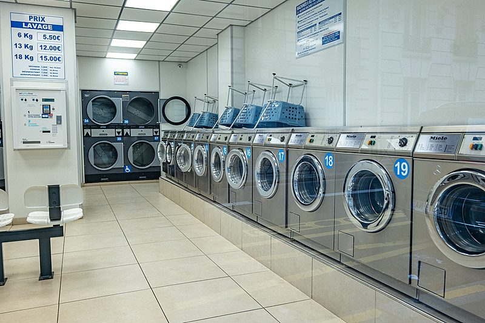
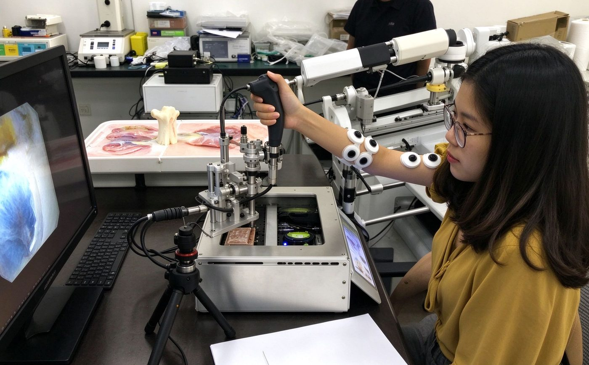
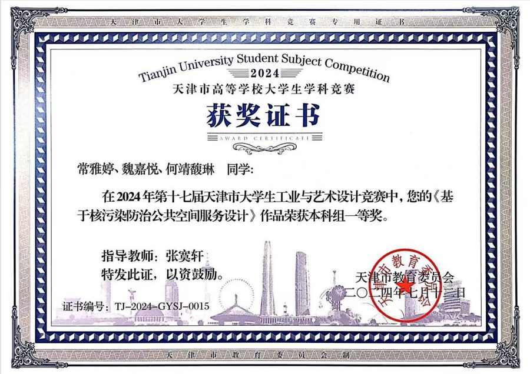
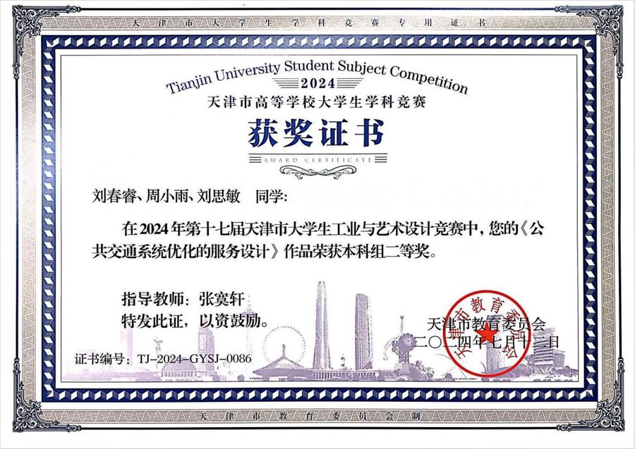
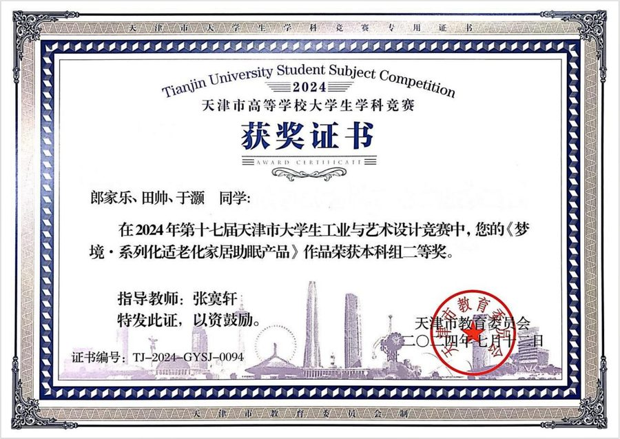
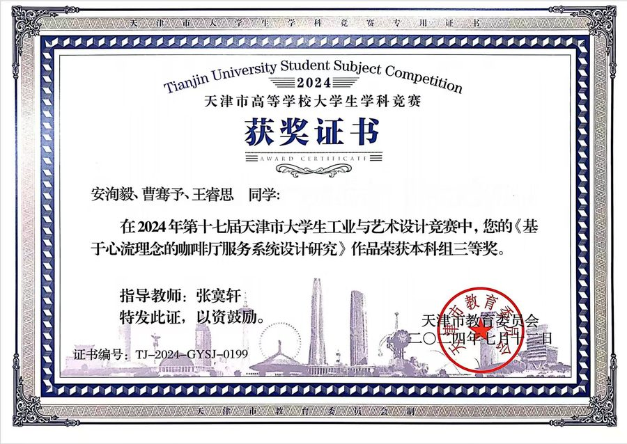
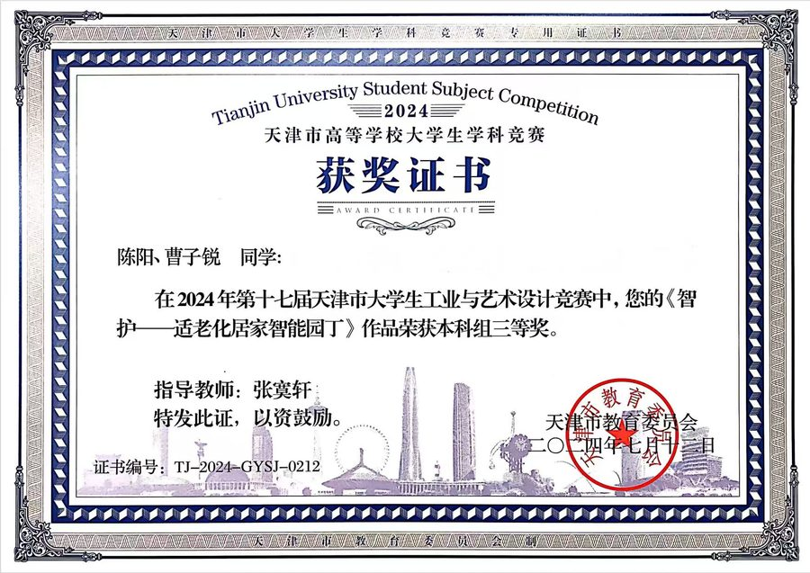
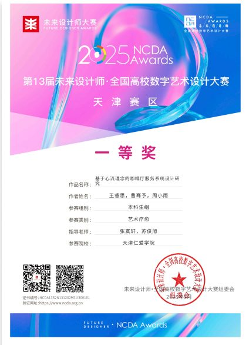
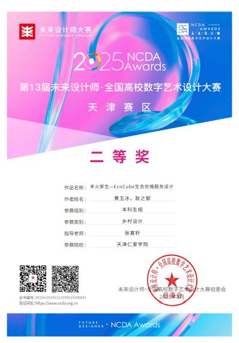

工作室项目、毕业设计与获奖荣誉作品展示
工作室团队主导的产学研合作项目与设计实践
用无人机低空遥感 + AI 表型识别，帮育种团队更快、更准地从大田里挑出好苗子。
十五堂（天津）文化科技有限公司 · 翼龙航空

为新加坡最大自助洗衣公司，设计一套"扫码即洗、自动结算"的设备归集与支付方案。
WonderWash（新加坡最大自助洗衣公司）

让泌尿外科医生坐在主控台前，用一双更稳、更准的手，完成软镜操作。
毕业生毕业设计作品展示
工作室团队在各类设计竞赛中获得的重要奖项

第十七届天津市大学生工业与艺术设计竞赛 · 《基于核污染防治公共空间服务设计》获本科组一等奖

第十七届天津市大学生工业与艺术设计竞赛 · 《公共交通系统优化的服务设计》获本科组二等奖

第十七届天津市大学生工业与艺术设计竞赛 · 《梦境·系列化适老化家居助眠产品》获本科组二等奖

第十七届天津市大学生工业与艺术设计竞赛 · 《基于心流理念的咖啡厅服务系统设计研究》获本科组三等奖

第十七届天津市大学生工业与艺术设计竞赛 · 《智护——适老化居家智能园丁》获本科组三等奖

第13届全国高校数字艺术设计大赛 · 《基于心流理念的咖啡厅服务系统设计研究》获天津赛区一等奖（本科组 · 艺术疗愈）

第13届全国高校数字艺术设计大赛 · 《禾火新生-EcoCube生态农棚服务设计》获天津赛区二等奖（本科组 · 乡村设计）